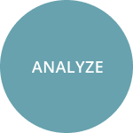
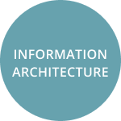
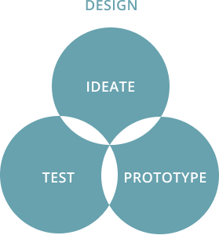
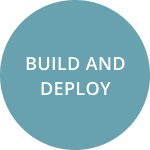
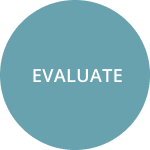

I’m currently a user experience designer and developer in Atlanta, GA. Throughout my career, I have been interested in designing products, systems, and experiences that not only create a positive impact, but also bridge the gap between user and business needs.
When I’m not designing, you can find me practicing Brazilian jiu jitsu, hiking, or reading.
My pathway to design
Before working in the technology industry, I was a research associate for a psychosis study, where I worked with diagnostic devices and software to monitor brain activity. While calibrating the device and program, I came across errors and resolved them with our specialist or through online forums. Over time, I became interested in the design and mechanisms of the software bundle so that I could efficiently troubleshoot issues. This led me to learn how to code.
After learning object-oriented programming, I landed an internship with a small dental staffing firm as a front-end developer. Not only did I drastically improve my JavaScript (specifically React) skills, but I also understood the product from user and stakeholder perspectives. Through working with a UX designer, I learned to research our clients’ pain points, develop user personas, map out user flows, and test features - all while communicating and iterating with the development team. I realized that designing systems and refining experiences for people who needed it most excited me.
Eventually, I learned to balance my interests, curious nature, and analytical background through design. To me, design is more than just clean interfaces and captivating interactions. As IDEO aptly puts it, “Design is about bringing together what is desirable from a human point of view with what is technologically feasible and economically viable.” It’s also about tackling complex problems through empathy, creativity, and collaboration. Going forward, I am refining my design process and hope to someday be involved in telemedicine or digital health.
Contact
hazelmdoctor@gmail.com
See work experience
- Resume
Interests
- Reading
- Brazilian jiu jitsu
- Fashion
- Video/board games
Languages
- Tagalog (Filipino)
- German
Hometowns
- Atlanta, GA
- Saipan, CNMI
My design process
Identify design problems, business requirements, and end users
Define and organize data from research efforts
Structure content based on research insights
Determine and implement creative solutions through brainstorming, creating models, and testing
Build solutions with code to near completion for review by stakeholders and testing by users
Assess feedback and make revisions as needed